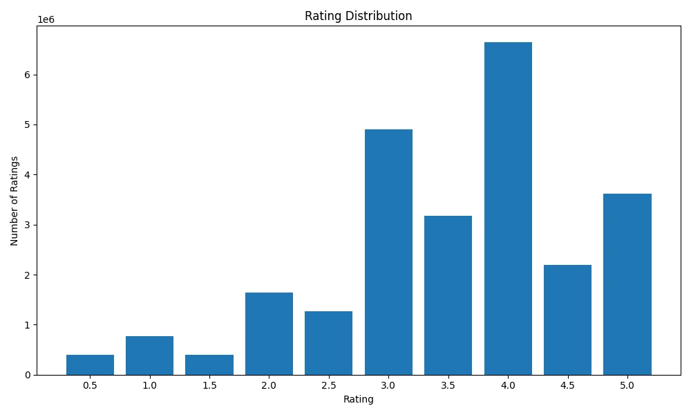
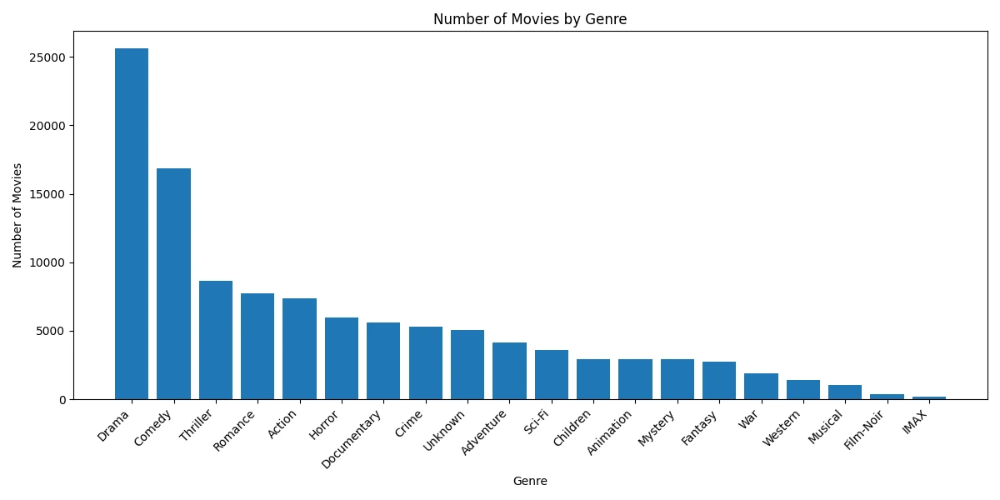

Finding the next
movie to watch.
A MovieLens analysis and recommendation system that brings together rating behavior, genre similarity, and a Power BI dashboard.
- My role
- Individual project creator
- Context
- Completed course project
- Tools
- Python · Power BI
pandas · SciPy · scikit-learn - Source dataset
- MovieLens 25M
What can ratings tell us
about what to watch next?
The project explores a movie catalog and its user ratings, then builds recommendations for unseen films. It uses a movie-discovery scenario to connect data preparation, analysis, and recommendation methods in one course project.
The source materials describe 25,000,095 ratings, 162,541 users, and 62,423 movies. These figures describe the source dataset.
One workflow, end to end.
I completed the project individually, covering the analysis pipeline, recommendation logic, and Power BI presentation.
- Audit and cleanChecked missing values, movie identifiers, duplicates, and rating ranges. Converted timestamps and prepared movie genres.
- Explore the patternsAnalyzed rating distributions, activity over time, genre frequency, and the most-rated movies.
- Build recommendationsImplemented collaborative filtering, genre-based similarity, and a weighted hybrid approach.
- Present the resultsCreated a Power BI dashboard and documented the workflow in a project presentation.
Look beyond a single average.
Exploratory analysis examines how ratings are distributed and which genres appear most often. These views help describe the dataset before attempting to model preferences.


Two signals. One ranked list.
Collaborative filtering uses a sparse user–movie matrix and TruncatedSVD with 50 latent factors. The modeling pipeline filters to users and movies with at least 100 ratings each.
The content-based component represents genres as binary features and uses cosine similarity. The hybrid combines normalized collaborative scores with genre-based content scores, excluding films the user has already rated.
70% collaborative + 30% content
Project configuration: a 70/30 weighting of the two signals.Working with scale and sparsity
The scripts process ratings in chunks of one million rows and use sparse matrices. This approach avoids building a full dense ratings table while preparing the data for modeling.
Results with their context.
The saved evaluation output reports the following for the SVD collaborative model. The evaluation script selects up to 500 eligible users, holds out five ratings per user, and considers ratings of at least 4.0 relevant. Users without relevant held-out items are skipped for ranking metrics.
These are recorded course-project results, not a new run or an evaluation of the final hybrid ranking. No baseline comparison or production test is available. The rating error leaves substantial room for improvement.
From raw files to a
documented analytical project.
The completed work includes preparation and analysis scripts, saved visualizations, recommendation outputs, an evaluation script, a database diagram, and a Power BI dashboard. The dashboard provides rating, genre, and release-year filters.
Next steps would be to compare against simple recommendation baselines, evaluate the hybrid model separately, and explore additional movie metadata. These are proposed improvements for a future iteration.
View the full dashboard image